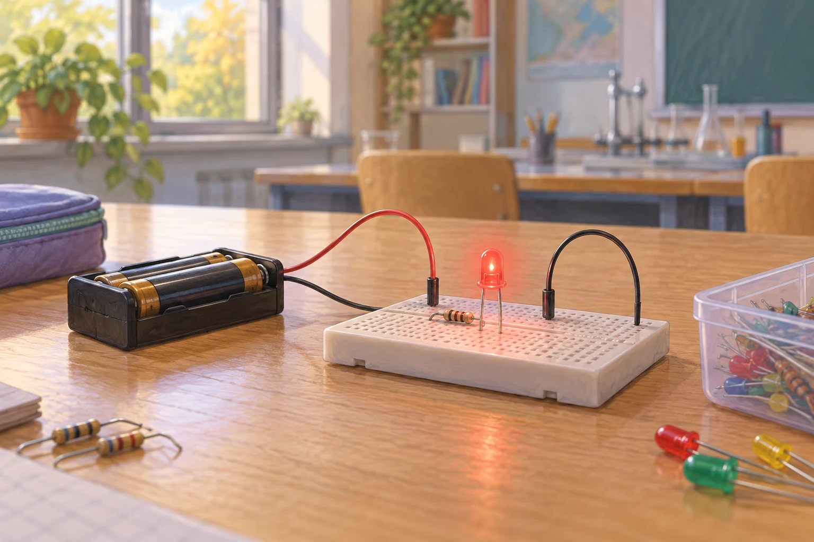
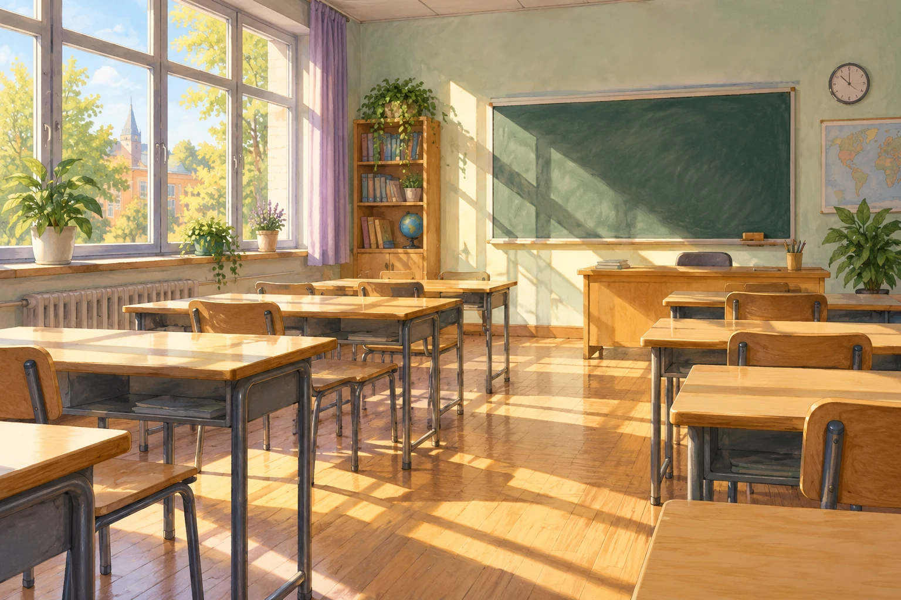

Zusatzaufgaben · Physik
Fermi-Aufgaben · Quantenobjekte
Wählt eine Aufgabe und entwickelt euren eigenen Lösungsweg.

Aufgabe 22 · Q1 GK
Photonen einer roten LED
Eine rote LED leuchtet mit einer elektrischen Leistungsaufnahme von ungefähr 0,1 Watt. Wie viele Photonen gibt sie ungefähr in einer Sekunde ab?

Aufgabe 26 · Q2 GK
Wie viele Lichtquanten treffen während einer Stunde durch ein Fenster?
An einem sonnigen Tag fällt Licht durch ein Fenster in Raum 351. Wie viele sichtbare Photonen gelangen dort ungefähr während einer 45-minütigen Unterrichtsstunde durch das Fenster?